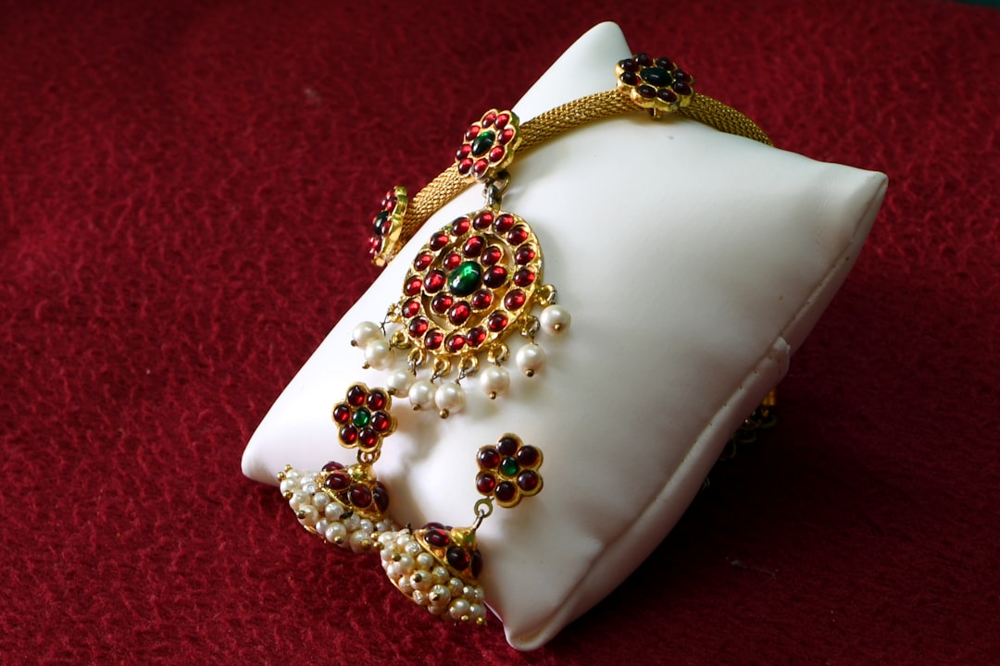
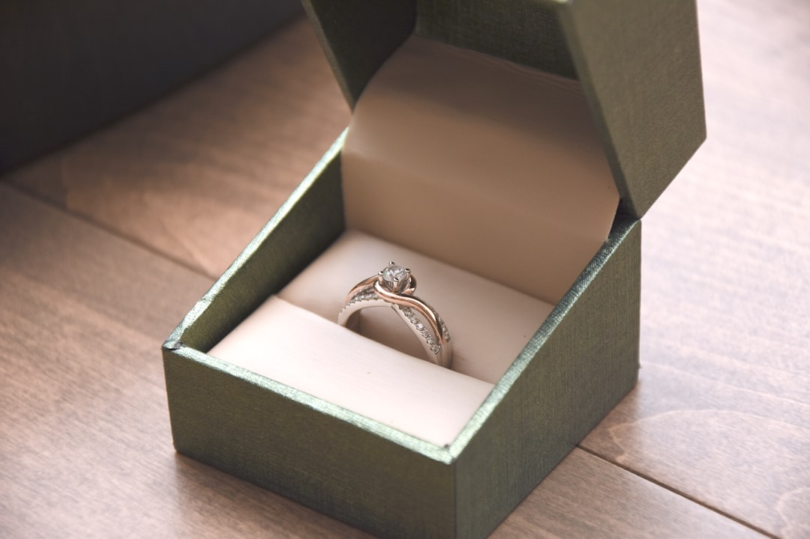
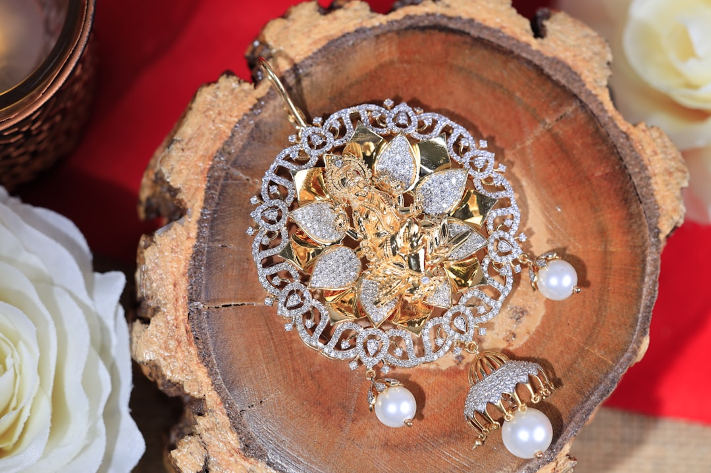
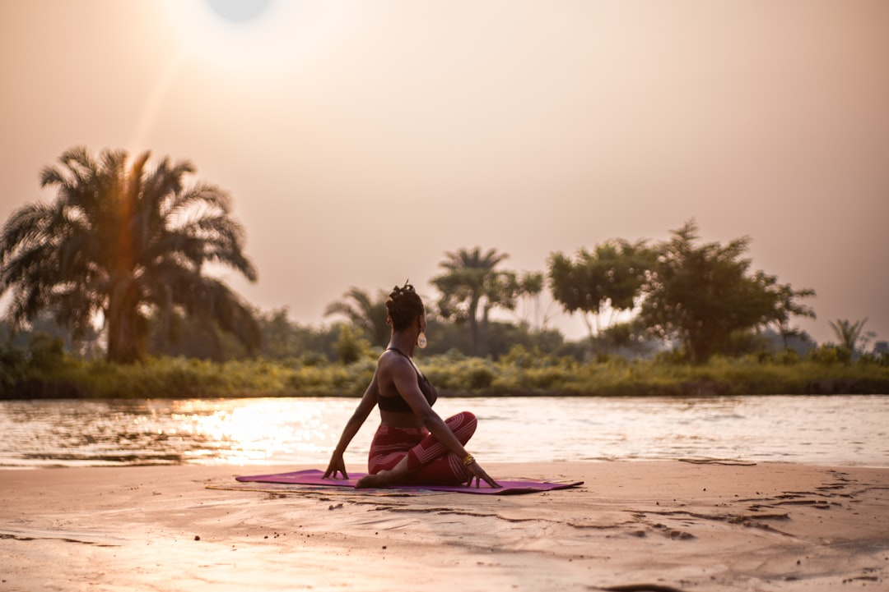
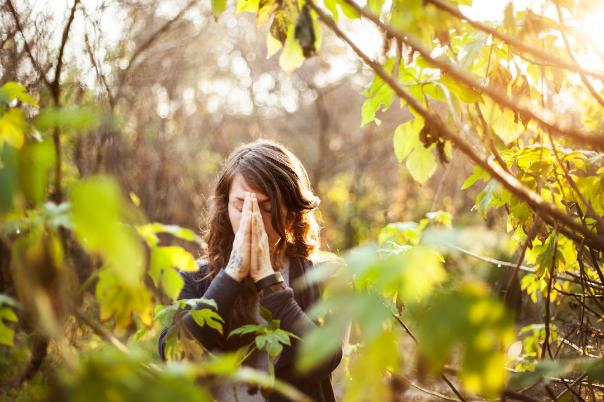
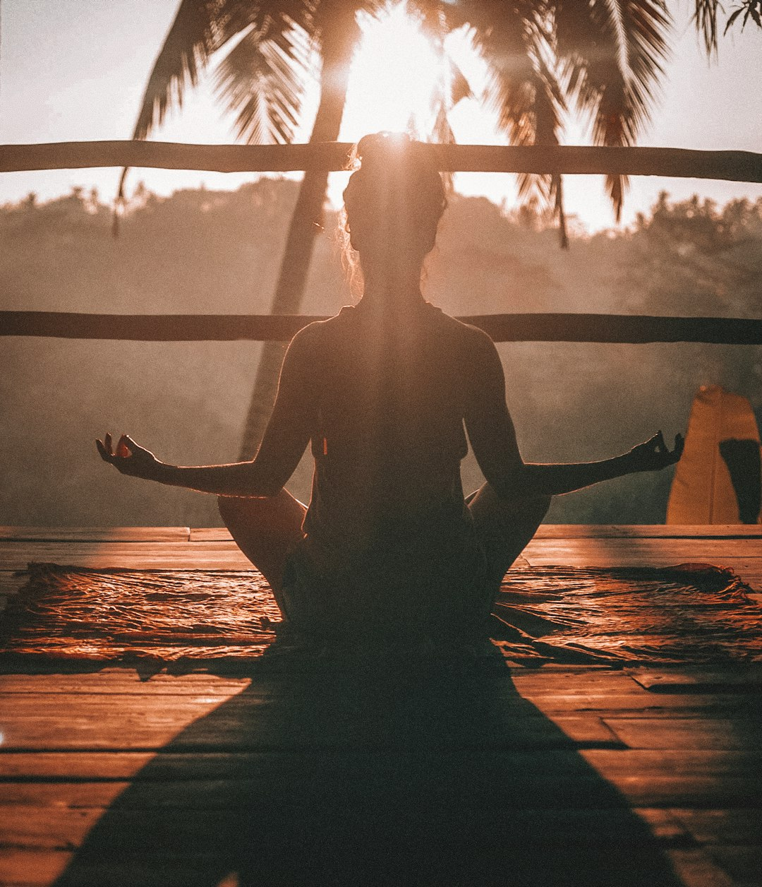
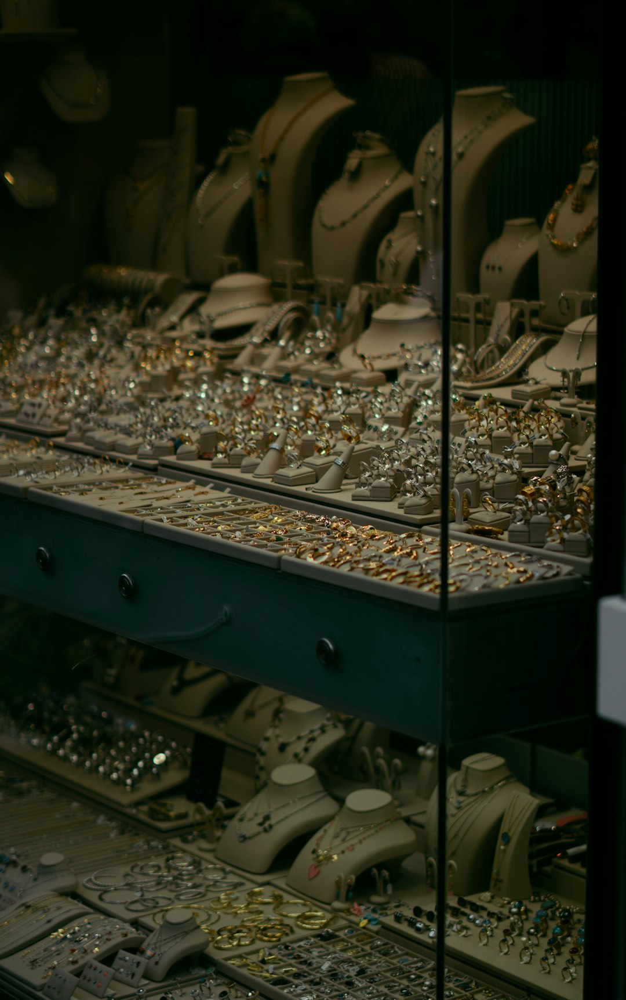
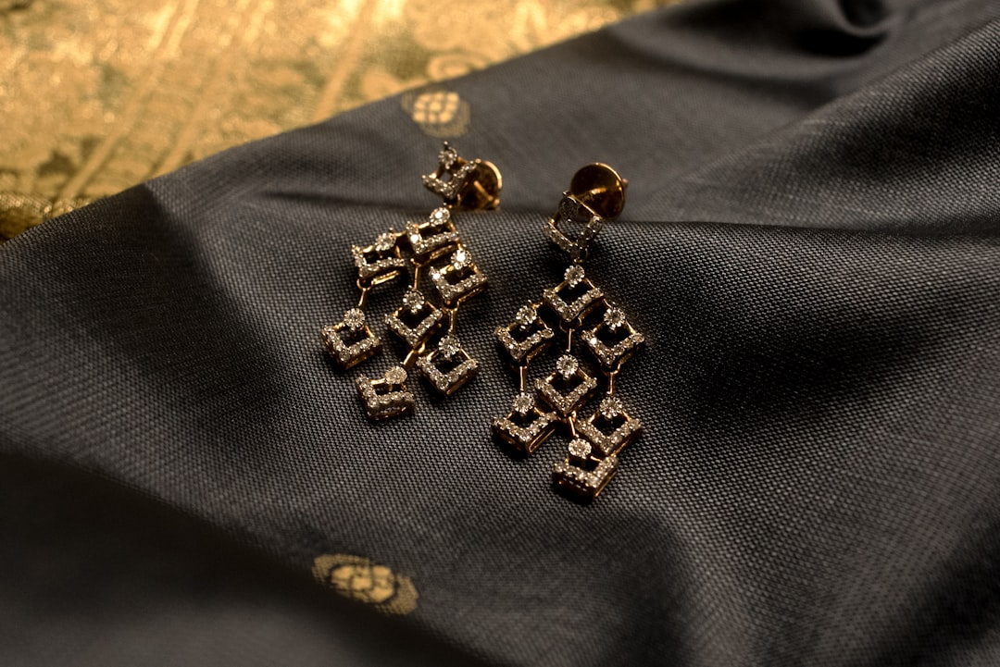

Devi here ! You've entered a creative space born from ritual, crystals, and wild earth. Here I share my passions, which have always been sacred ceremony, photography and making jewellery…
So, what can you expect?
- SACRED RITUALS & CEREMONIES
- IMAGERY FROM DESTINATIONS ALL OVER THE WORLD
- PHOTOGRAPHY PRINTS AVAILABLE
- HANDMADE CRYSTAL AND MACRAME JEWELLERY READY TO ADORN YOU
My soul is on display throughout this space so take a look around and let me know what you think. I'm humbled that you're here.

Welcome !
ABOUT MESHOP JEWELLERY
Let's start with the jewellery! I've been creating for over a decade and I fell in love with wrapping crystals. The love has only evolved over time, and so have the designs. I encourage you to get lost on my instagram page… @devi__divine
Below are some pieces I've created in the past which really showcase how gorgeous the crystals are while adding that extra bit of magic through the design…


Now we'll move onto the blog space… I love writing and sharing stories of my travels. It helps me to keep some of my memories alive.
And after exploring this beautiful globe for years, I come with stories to tell and recommendations for you. If you love a little adventure, have a read…
BLOG

WE ARE SO BLESSED TO WITNESS THINGS THAT NATURE HAS TAKEN MILLIONS OF YEARS TO CREATE
Don't you think? This is what inspired my travels from the beginning — the urge to marvel at Earth's mind-blowing landscapes, witness its wildlife and experience the different cultures of people all around the world. I've shared some of my experiences in my blog where I hope I can make you feel something and imagine you're there. And I hope you feel inspired to explore.
CHASING WALL ART ?
Spice up your space with a little colour and some dreamy photography that will have you wondering where to wander next… I swear one look at this gallery and you'll be hitting the book button on those flights you've been thinking about.
VIEW THE GALLERY
If blogs aren't your thing and you're not here for prints but you're still wanting that destination inspiration… you should follow the link below
DESTINATIONS





FOLLOW MY ADVENTURES